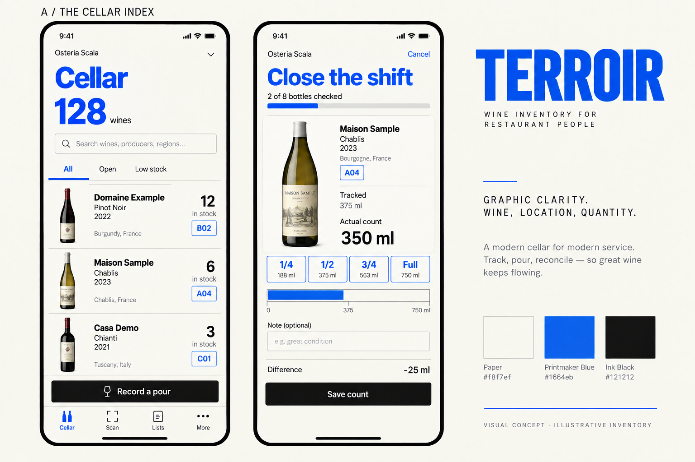
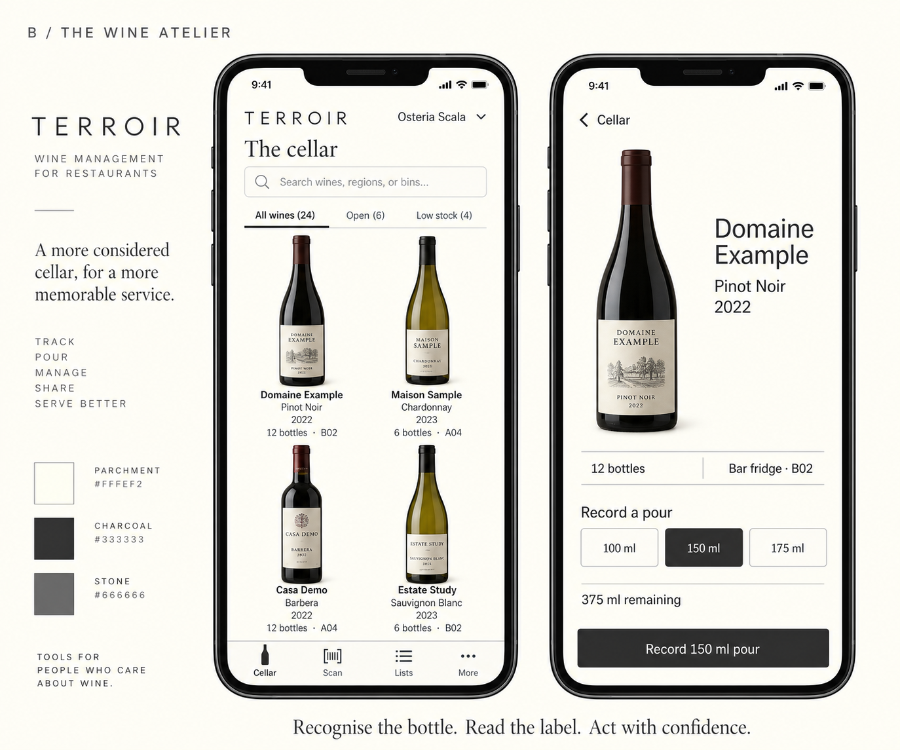
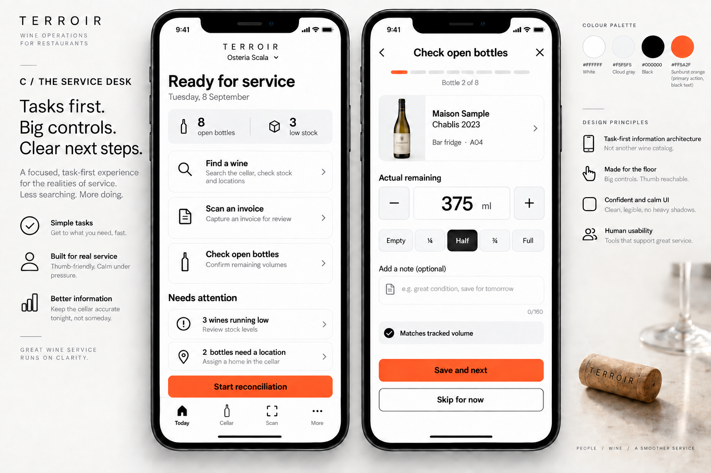

Terroir / Refero research / Round 02
Three different ways
to work with wine.
The earlier options shared too much of the same layout. These explore a graphic inventory index, a photographic catalogue and a task-first service desk. Each has two mobile screens and a distinct reference system.
A · The Cellar Index
My recommendation. Blue typography gives Terroir an unmistakable identity. Open rows keep wine, vintage, stock and bin together; the close-of-shift screen makes the count and variance explicit.

Foundation: Fidèle Editions. Inventory structure: Shopify; image-assisted wine identification: Uber Eats, researched through Refero.
B · The Wine Atelier
A catalogue built around recognising the bottle. Parchment, charcoal and square controls support large frontal bottle photographs. Best for browsing and wine detail; fewer wines fit on screen than in A.

Foundation: Aesop, indexed as NGLORA in Refero. Product-selection pattern: Uber Eats. Generated bottle images are illustrative.
C · The Service Desk
A task-first home for a busy shift. Find a wine, capture an invoice or check open bottles. The reconciliation concept focuses on one bottle at a time with a prominent next action.

Foundation: Dot Inc.. Focused quantity editing: Shopify. Sequential counting is a proposed interaction, not a shipped feature.
These are generated visual concepts, not running application screens. Sample bottles, labels and counts are fictional. Production implementation will use verified wine assets and tested quantity, save and navigation behavior.